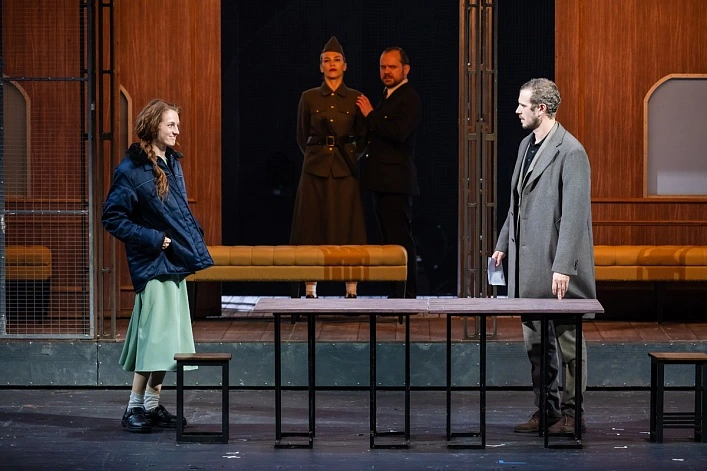
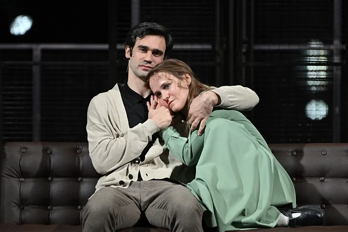
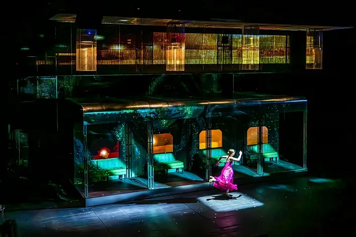
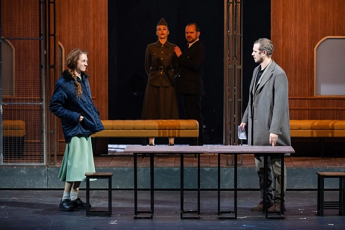
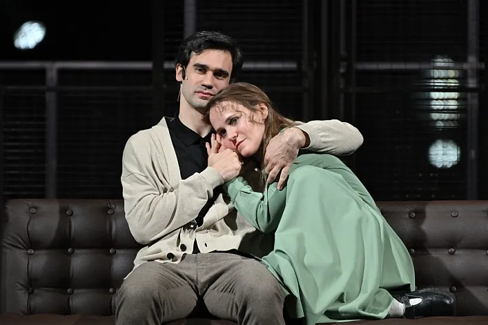
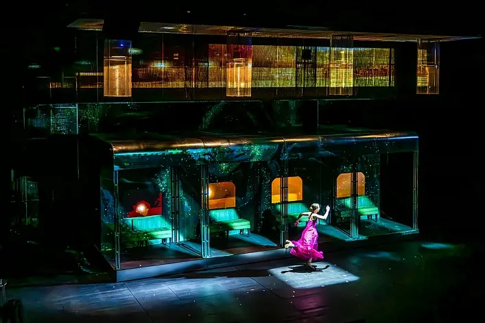

Воскресение
Драма о мечтах и упущенном времени
Автор: Лев Толстой (по мотивам)
Режиссёр: Никита Кобелев
Премьера: 26 января 2024 года
Продолжительность: 3 часа
Жанр: Философская драма
История Кати Масловой и Нехлюдова — о грехе, искуплении и втором шансе. Минимализм сцены, мощная игра, тишина, которая говорит громче слов.
- Катя Маслова — Мария Лопатина
- Нехлюдов — Тихон Жизневский
- Судья — Ольга Белинская
- Защитник — Андрей Матюков
- Корчагин, генерал — Игорь Волков
- Умершая мать Нехлюдова — Ольга Белинская
- Масленников — Иван Трус
Санкт-Петербург, площадь Островского, 6
Купить билет
Ближайшие даты: 8, 15 декабря 2025